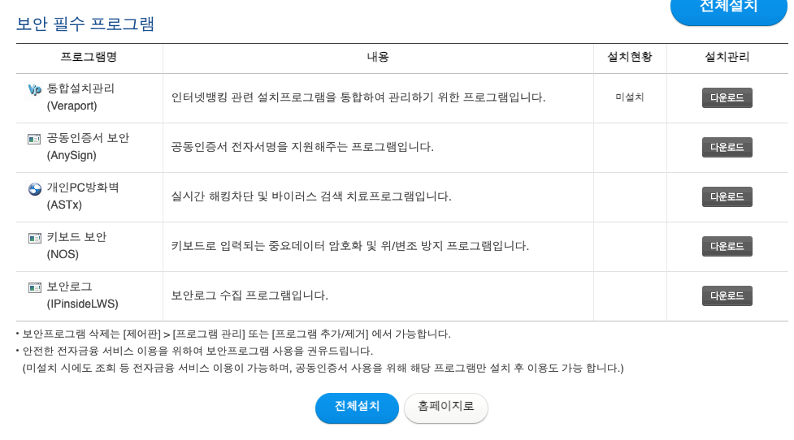

그럼 이 좆같은 "보안" 프로그램은 왜 깔았던 거임???

그럼 이 좆같은 "보안" 프로그램은 왜 깔았던 거임???
ㅈ이 있어야 ㅅㅅ를 하고 뭔가를 낳지. 해킹은 ㅆ
좆같으라고
법적인 면책
책임회피용이지 ㅋㅋㅋㅋㅋㅋㅋㅋㅋ
책임 전가용 그 이상도 그 이하도 아님 ㅋㅋㅋㅋ
보안있는데도 뚫림
할만큼 했음
나도 어디서 들었는데
해커가 작정하고 개인컴퓨터 해킹했을떄는 저게 다 소용없다함
저건 그냥 그 윈도우 원격프로그램 이용해서 들여다보는거 막는 거라함
대놓고 원격프로그램으로 사용하는거 아니면 우회하는거 쉽다함
심지어 백도어 깔린 해적판 윈도우xp 정도에도 손쉽게 뚫림
알려진 악성코드만 막아도 솔직히 할일 9할은 한거고
백도어깔린 해적판 윈도우 xp쓰는거면 손쉽게 뚫림 ㅇㅈㄹ하는게 아니라 그냥 제 컴터 넘겨드릴게요 선언한수준인디
문제는 법 면책용에다 컴터 리소스 드럽게 잡아먹고 프로그램충돌나고 이런거지
근데 그것도 서비스팩3 업데이트 했으면 괜찮았을껄
백도어 XP로 주로쓴게 디도스용 좀비봇이였음
써먹을데도 없는데 ㅈ이 있는 개붕이 같은 것
면피용
콘돔임
책임지고 깜빵 갈 사람 필요해서
갓스가 잘되어야 하는 이유
저걸 깔았기 때문에 사용자탓 못하게된 은행은 개추ㅋㅋㅋ
어허 책임 떠넘기기
이번에 털린게 크리덴셜 기법으로 추정되서 저게 의미가 없음 ㅋㅋ
그니깐 내 아이디 비번을 다른사이트에서 사용하던게 그 사이트 털리면서 아이디 비번이 털렸고, 그걸로 로그인한거라서 2차인증 안걸면 답이없음
공동인증서도 확보돼있었단 말?
인증서들이 2차인증 아님?
우리 재산 보안용이지 니네 정보 보안용이 아님 ㅋ
저 좆같은건 꼭 입력할거 다하고 버튼 누르면 00가 없다고 까시라고함
좆같으라고